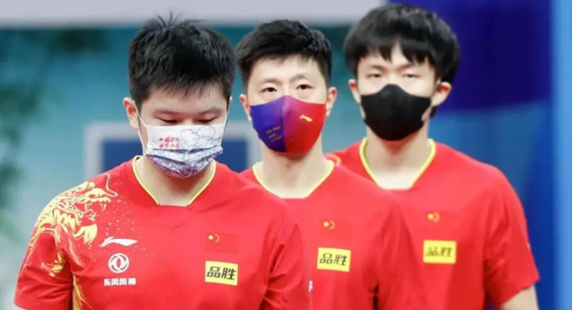
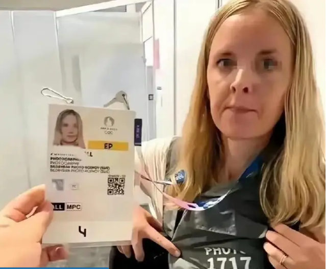
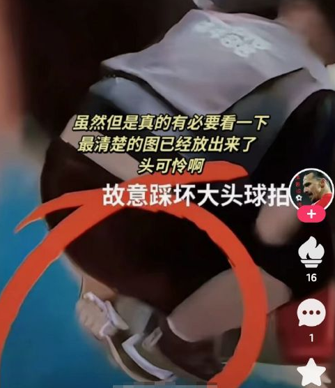

2024年8月6日，巴黎奥运会乒乓球男团比赛拉开帷幕。中国队派出马龙、樊振东和王楚钦三位选手出战，目标直指金牌。经过一番激烈角逐，中国队以3-0的比分战胜印度队，迅速晋级八强。这场比赛也是王楚钦在男单比赛失利后重返奥运赛场的首次亮相。
在此前的男单比赛中，王楚钦以2比4不敌瑞典选手莫雷加德，出人意料地被淘汰。赛后，有传闻称王楚钦的失利可能与他更换球拍有关。

在与孙颖莎的混双比赛中夺冠后，王楚钦的球拍被踩断，导致他临时换拍，这一事件在网络上引起了广泛讨论。
王楚钦在男单比赛失利后情绪低落，在收拾行装准备离场时，遭到了一位手持摄像机的女记者的意外冲撞。这名女记者突然变换方向冲向毫无防备的王楚钦，令他明显受惊并显得懊恼。
事后，网友通过奥运会赛场上记者的编号确认，这名编号为1717的女记者来自瑞典。赛事组委会随即做出决定，禁止该记者进入巴黎奥运会的比赛场地。这一事件引发了广泛关注和讨论。

截止到目前，这位女记者也没有公开致歉！
另外，踩坏球拍的事件尚且还在调查中，可以初步确认的是，踩坏王楚钦球拍的人同样是位记者，希望这件事也能得到严肃处理，给予王楚钦一个应有的公道。

目前，王楚钦以7925的总积分排名世界第一，被誉为最有希望男单摘金的选手，相信正是因为如此，王楚钦才会如此被针对。
乒乓球一直是中国队的强势项目，如今也被国外虎视眈眈，中国代表团可谓是四面受敌。不过，实力在于本身，不管国外使用什么下三滥手段，中国队的硬实力足以支撑我们站上最高领奖台。
中国队将在接下来的比赛中继续努力，争取在巴黎奥运会上取得更好的成绩。
Advertisements